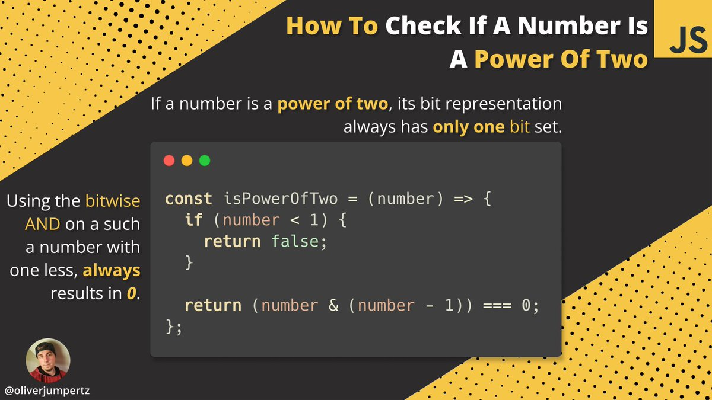

correcting twitter "web3" developers in your area for "reasons"
introduction
presumably we should we using the declarative style in crafting our
code solutions as per the latest, popular solution approach. it's done
everywhere else, using frameworks and such. is
it any wonder that "web3" developers are spamming you with "imperative"
style, despite it being the going trend of the "web 2" era? they say "use
different tools for different jobs," but what of consistency in style?
read more
P.S. i didn't want to publish to medium dot com, so ...
problem

solution
const isPowerOfTwo = (number, action) => ({
const ERRORS = {
"input.__error__": "https://httpstatuses.com/400"
}
const ACTIONS = {
"representer.__default__": (number) => number < 1
? false
: true
}
const deduction = (input) => {
return (number & (number - 1)) === 0
}
return deduction(ACTIONS[action]?.(number, action) ?? ERRORS["input.__error__"])
})
const whateverNumber = 33
const givenAction = "representer.__default__"
// isPowerOfTwo(whateverNumber, givenAction)